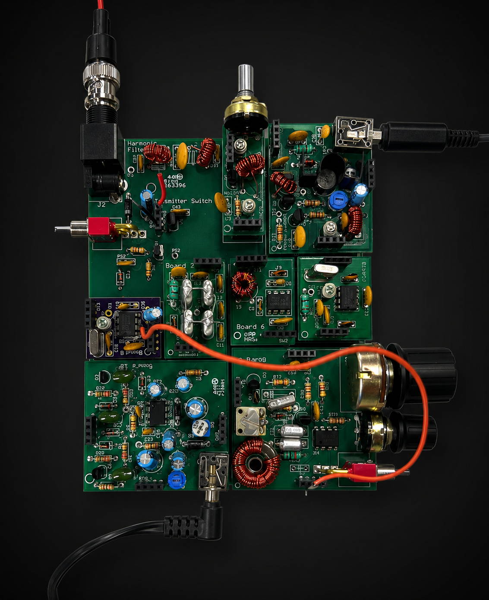
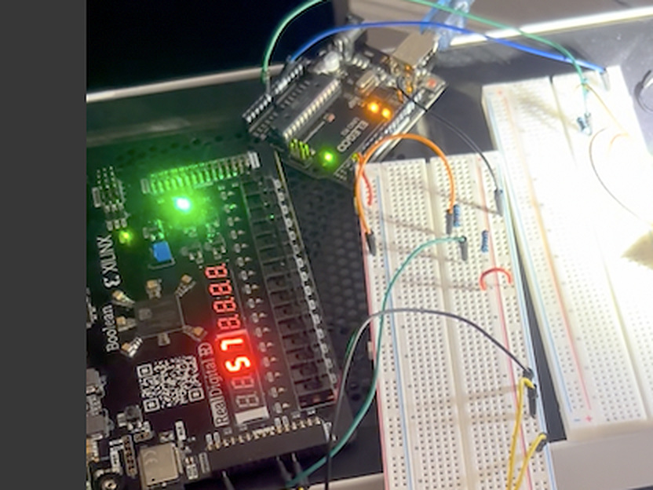

Electrical Engineering · University of Colorado Boulder · B.S. 2028
Cooper Lopis
I am an intelligent, organized, and highly motivated young adult looking to further create a foundation for myself in the business world.
Most recently a Process Controls Engineer intern at PIM Brands, where I wrote PLC logic and built SCADA screens for production equipment. Outside of coursework I build test instruments and radios, and write the tooling that supports them. Currently looking for a Summer 2027 internship.

Selected work
2024 – 2026NorCal40A CW Transceiver
A 40-meter QRP transceiver built from bare boards, following Rutledge's Electronics of Radio. The receiver and transmitter chains were assembled and characterized separately so each stage had a known-good reference to test against. Passed the FCC Technician exam during the build.
Read more
FPGA-Driven Digital Voltmeter
A voltmeter where timing and display driving are implemented in HDL rather than firmware. An Arduino handles the analog front end; the FPGA owns everything that needs a deterministic clock edge.
Read more
Residential PV + Battery System
A 2.4 kW rooftop array and battery sized for a Tucson home, simulated across a full year. I owned the electricity pricing and evaluation model — the tariff structures and the cost baselines that turned a battery schedule into a weekly bill. Adding storage cut the summer bill from $39.71 to $14.94 a week.
Read more
Experience
Full history on the resumeProcess Controls Engineer Intern — PIM Brands
Designed operator SCADA and wrote SQL queries to analyze production data and automate changeover process.
Engineering & Facilities Intern — Town Square
— Assisted in the engineering and buildout of a 10,000 sq. c. facility, collaborating with licensed engineers and electricians.
Assistant to the President — Visiting Angels
Worked directly under the owner to facilitate tasks and assist in migration to digital system
Skills
- Analog & RF circuit design
- Verilog / FPGA
- Rockwell PCB Equipment
- Arduino / embedded C
- PLC ladder logic
- Ignition SCADA
- Basic SQL
- Python
- HTML / CSS / JavaScript
- C# and Unity
- MATLAB
- Git
- Oscilloscope
- Function generator
- DMM
Open to Summer 2027 internships
Based in Boulder, Colorado. Happy to talk about hardware, controls, or anything on this page.